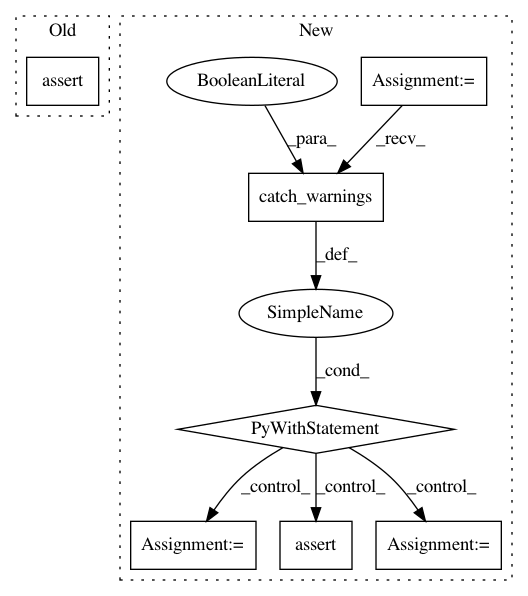

ece99a5ea14b88bbf302eef642b32971dc618160,dipy/reconst/tests/test_mapmri.py,,test_mapmri_metrics_anisotropic,#Any#,387
Before Change
assert_almost_equal(mapfit.rtpp(), rtpp_gt, 5)
assert_almost_equal(mapfit.rtop(), rtop_gt, 5)
assert_almost_equal(mapfit.ng(), 0., 5)
assert_almost_equal(mapfit.ng_parallel(), 0., 5)
assert_almost_equal(mapfit.ng_perpendicular(), 0., 5)
assert_almost_equal(mapfit.msd(), msd_gt, 5)
assert_almost_equal(mapfit.qiv(), qiv_gt, 5)
After Change
assert_almost_equal(mapfit.rtap(), rtap_gt, 5)
assert_almost_equal(mapfit.rtpp(), rtpp_gt, 5)
assert_almost_equal(mapfit.rtop(), rtop_gt, 5)
with warnings.catch_warnings(record=True) as w:
ng = mapfit.ng()
ng_parallel = mapfit.ng_parallel()
ng_perpendicular = mapfit.ng_perpendicular()
assert_equal(len(w), 3)
for l_w in w:
assert_(issubclass(l_w.category, UserWarning))
assert_("model bval_threshold must be lower than 2000".lower()
in str(l_w.message).lower())
assert_almost_equal(ng, 0., 5)
assert_almost_equal(ng_parallel, 0., 5)
assert_almost_equal(ng_perpendicular, 0., 5)
assert_almost_equal(mapfit.msd(), msd_gt, 5)
In pattern: SUPERPATTERN
Frequency: 3
Non-data size: 7
Instances
Project Name: nipy/dipy
Commit Name: ece99a5ea14b88bbf302eef642b32971dc618160
Time: 2019-07-23
Author: skab12@gmail.com
File Name: dipy/reconst/tests/test_mapmri.py
Class Name:
Method Name: test_mapmri_metrics_anisotropic
Project Name: biocore/scikit-bio
Commit Name: 7cd05162e9bc9af26f65cc72bfa23a4eb08c79f8
Time: 2015-06-26
Author: gregcaporaso@gmail.com
File Name: skbio/draw/tests/test_distributions.py
Class Name: DistributionsTests
Method Name: test_get_distribution_markers_insufficient_markers
Project Name: nipy/dipy
Commit Name: 5bf6287002b7acd55524d527ff39b543a876fc4a
Time: 2017-03-13
Author: arokem@gmail.com
File Name: dipy/viz/tests/test_fvtk.py
Class Name:
Method Name: test_colormaps_matplotlib